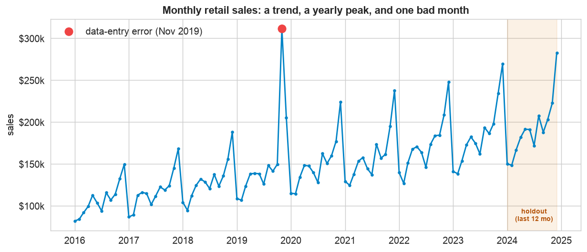
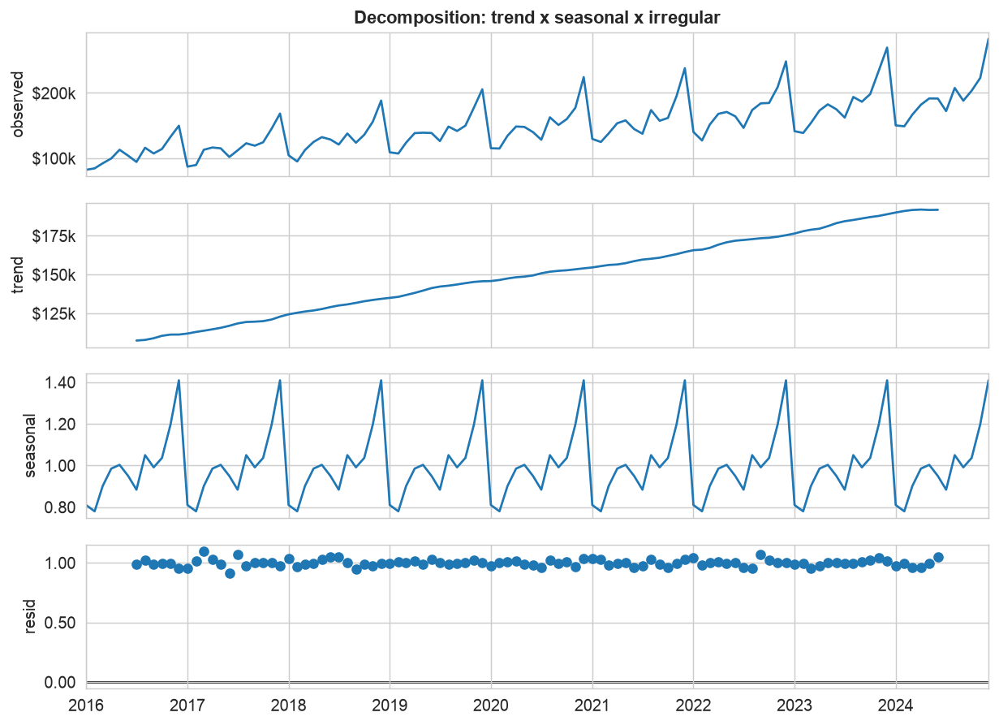
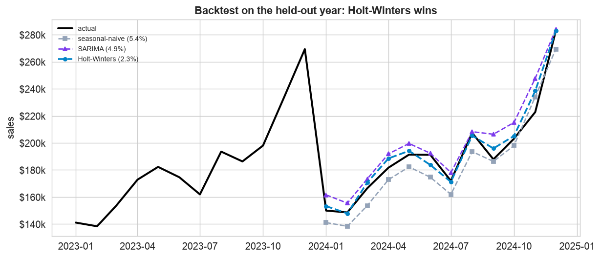
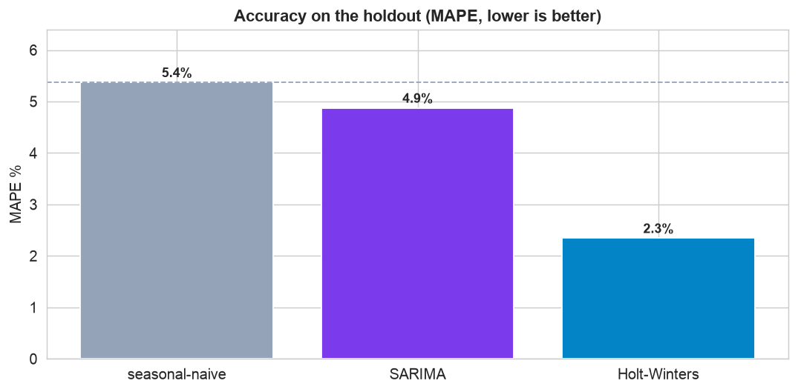
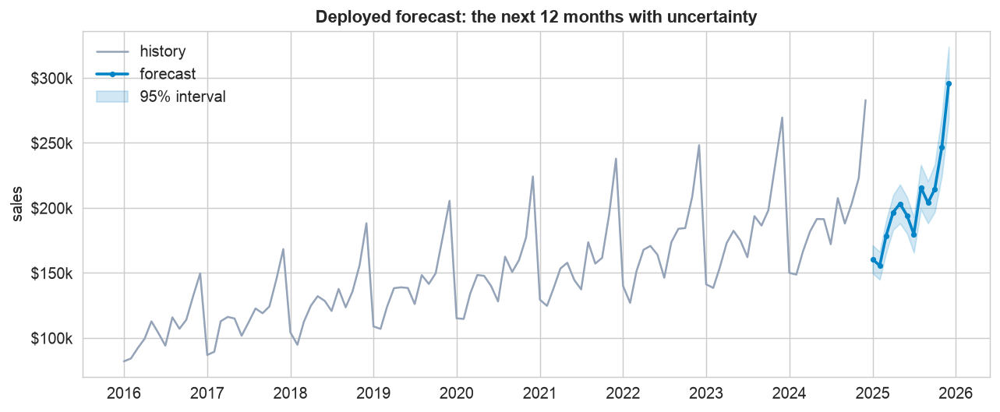

A forecast is not a party trick, it is an input to a decision: how much to stock, how many people to schedule, what budget to set. That raises the bar. A number without a baseline to beat, proof it works out of sample, and an honest range is worse than useless, it is a false promise. This chapter runs the disciplined workflow end to end and ends with a forecast a planner can actually act on.
It uses every idea from the part: decomposition and stationarity (see Components of a Time Series), Holt-Winters and SARIMA (see Forecasting Models), and the accuracy metrics and baselines (see Forecast Accuracy), on one messy, real-shaped series, all the way to a deployed forecast.
The 12-Step Forecasting Method
The same repeatable loop as the other case studies, tuned for time series. The companion notebook runs all twelve steps; the sections below tell the story and show the plots.
Monthly sales for a growing retailer, 108 observations from January
2016 to December 2024, with a clear upward trend, strong yearly seasonality (a December peak), and one deliberate
data-entry error to catch and clean. Two columns: month and sales. The
last 12 months are the holdout.
Define, Inspect & Clean (Steps 1–4)
Define the decision and the bar
The retailer needs a 12-month sales forecast for inventory, staffing, and budgets. Success is concrete: beat a seasonal-naive baseline, keep error (MAPE) low, and deliver an uncertainty band, because a single number is a false promise for year-ahead planning.
Collect and inspect
Always plot before you model, the eye catches what summaries miss.

Look before you model. The series shows a steady upward trend and a repeating yearly season peaking every December. But one month (red, November 2019) spikes far above its neighbors, a likely data-entry error that would poison any model. The shaded band is the held-out last year we will forecast and grade against.
Clean the error month
A rolling-median check flags the month sitting farthest from its local neighbors, November 2019, at roughly double the surrounding level. We blank it and interpolate from its neighbors, then model the cleaned series. Cleaning one bad point is unglamorous but decisive: left in, it would drag the trend and distort every forecast.
Decompose & Check Stationarity (Steps 5–6)
Decompose into trend, season, and noise
Before choosing a model, see the pieces it must capture.

Trend plus season plus noise. Decomposition confirms a trend adding about $960 a month and a seasonal factor that runs about 41% above average in December and about 22% below in February. The seasonal swing grows with the level, so this is multiplicative seasonality, which steers us toward multiplicative Holt-Winters. The residual panel is small and patternless, a good sign the split is clean.
Check stationarity
Most models assume a stable mean. The raw series is non-stationary (ADF p ≈ 0.90) because its mean trends up; one difference removes the trend and it passes (p ≈ 0.00). That is the I (integrated) term, and it is why the SARIMA below uses d = 1. Seasonality, being a repeating pattern rather than a wandering mean, is handled by the seasonal part of the model.
Baseline, Model & Validate (Steps 7–10)
Split, set a baseline, fit two models
We split in time (96 months to train, the last 12 to test) so the evaluation mimics real forecasting. The seasonal-naive forecast already captures the yearly pattern and scores about 5.4% MAPE, the bar to beat. Then we fit Holt-Winters (multiplicative, matching the data) and SARIMA(1,1,1)(1,1,1,12).
Validate on the held-out year

Grade on data the models never saw. On the held-out year, Holt-Winters (blue) hugs the actual line including the December peak, SARIMA (purple) is close, and the seasonal-naive baseline (grey) lags. Judging by eye is not enough, so we score every model with the metric panel.

Holt-Winters wins. By MAPE, Holt-Winters scores about 2.3%, less than half the baseline, with SARIMA a respectable 4.9%. Both beat seasonal-naive (MASE below 1), but the multiplicative Holt-Winters fits this multiplicative series best, so it is our choice. Reporting several metrics, and confirming they agree, is what makes the pick defensible.
Interpret: are the residuals clean?
A trustworthy forecast leaves behind white noise. The winner's residuals pass a Ljung-Box test (no leftover autocorrelation), meaning it captured the trend and season with no obvious signal wasted. Only now is it safe to deploy.
Deploy the Forecast (Steps 11–12)
Refit on all data, forecast the true future
Holding out was only for grading. Before forecasting the real future we refit the winner on the entire cleaned history, using every scrap of information, then project 12 months ahead.

The deployed forecast. The model projects about $2.4M over the next 12 months, with the familiar December peak near $296k and a 95% interval of roughly $270k to $324k. Notice the band widens the further out it goes, honest horizon risk. A planner should budget against that fan of uncertainty, not the single line, and in production you rerun this each month as new sales land.
Communicate
The final step turns the model into a sentence a manager can act on, which is the plain-English write-up below.
Communicate: the Plain-English Write-Up (Step 12)
For the planning team
What is this? A month-by-month sales forecast for the next year, built from nine years of history, so the team can plan inventory, staffing, and budget with a realistic view of what is coming, and how sure we are.
What goes in, and what comes out
Input: our monthly sales history. Output: a forecast for each of the next 12 months, each with a range (a best estimate plus a 95% band) rather than a single number.
The decisions we made, and why
- ✓We fixed one bad month first. One historical month was recorded at roughly double its true value; left in, it would have skewed the whole forecast, so we replaced it with a sensible estimate from the months around it.
- ✓We insisted the model beat a simple benchmark. “Same as last year” is already a decent forecast, so anything we ship has to do clearly better, and ours does, less than half the error.
- ✓We tested it on a year it had never seen before trusting it, and we report a range, because pretending a year-ahead number is exact would mislead the plan.
How good is it, in plain terms
On the most recent year, the forecast was accurate to about 2.3%, roughly $4,500 off in a typical month near $190k, and well ahead of a naive last-year guess. It is reliable enough to plan against, as long as you respect the widening band further out.
The bottom line
Sales are growing about $960 a month with a strong, predictable December surge. We forecast the next year at roughly $2.4M, with December near $296k (anywhere from about $270k to $324k). Plan against the range, refresh the forecast each month, and expect the busiest month, by far, to be December.
Run the whole project in Python
The companion notebook is the full 12-step workflow: it loads and cleans the series (fixing the bad month), decomposes it, tests stationarity with ADF, sets a seasonal-naive baseline, fits Holt-Winters and SARIMA, grades them on the holdout with MAE/RMSE/MAPE/MASE, checks the winner's residuals, then refits on all the data and forecasts the next 12 months with a simulated prediction interval, every step explained.
View opens the rendered notebook instantly.
Open in Colab runs it live. To run locally, install numpy, pandas,
matplotlib, statsmodels, and openpyxl.
🎓 Key Takeaways
- ✓Clean before you model: one bad month (Nov 2019) would have skewed everything; a rolling-median check caught it.
- ✓Decomposition guides the model: a growing seasonal swing meant multiplicative seasonality, so multiplicative Holt-Winters.
- ✓Beat the baseline, prove it out of sample: Holt-Winters at ~2.3% MAPE more than halved the seasonal-naive 5.4%.
- ✓Refit on all data before deploying: holding out is only for grading; the shipped forecast uses every month.
- ✓Ship a range, not a line: the 95% interval widens with the horizon, and that band is what the business plans against.
Take It Further
Five ways to stress-test the forecast in the notebook:
Rolling-origin backtest
Re-forecast from several cutoffs and average the error, more trustworthy than one split.
Does the 95% interval hold?
Backtest the coverage: do about 95% of actuals fall inside the band?
A log-transform for SARIMA
Log the series to turn multiplicative seasonality additive; does SARIMA improve?
np.log(train), forecast, then np.exp.Automatic order search
Search a small grid of SARIMA orders and pick the lowest AIC (the auto_arima idea).
.aic.How far can you trust it?
Plot the actual, the forecast, and the 95% band together, and watch the band fan out with the horizon.
All five, worked in a companion notebook
A second notebook, Take It Further, rebuilds this chapter's forecast and works every extension with visuals and explanations, a rolling-origin backtest, a prediction-interval coverage check, a log-transform for SARIMA, an automatic AIC order search, and how the interval widens with the horizon.
Quiz: Test Yourself
Eight questions on the forecasting workflow, from cleaning to deployment. Answer them, hit Check Answers, and keep refining until you score 100%. Your progress is saved.
We forecast a steady, seasonal series. Next we turn to one whose variance is the story. Case Study: Financial Volatility & Risk models daily returns with GARCH, forecasts volatility, and estimates Value-at-Risk.